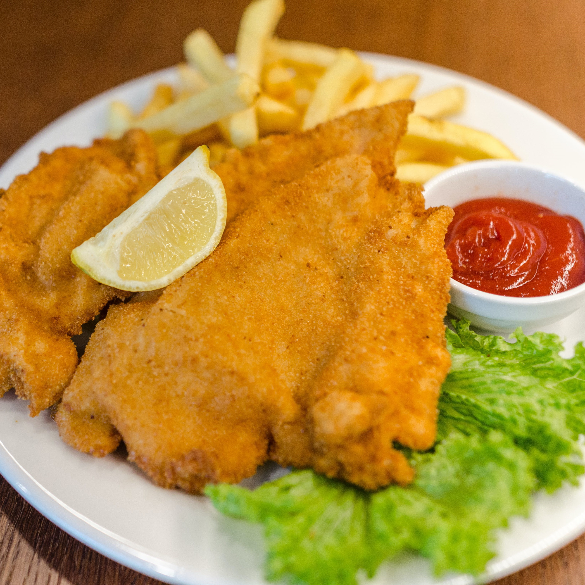

Crispy Shredded Chicken Recipe

Ingredients
- 320g pack chicken mini breast fillets
- 2½ tbsp light soy sauce
- Vegetable oil, for frying
- 1 red pepper, deseeded and thinly sliced
- 1 green pepper, deseeded and thinly sliced
- 3 tbsp cornflour
- 3 tbsp sweet chilli sauce
- 1 tbsp garlic and ginger paste
- 1 tbsp sesame oil
- 2 spring onions, trimmed and finely sliced
Method
- Slice the chicken into thin strips. Pour over 2 tbsp of the soy and marinate in the fridge, covered, for 1 hr.
- Meanwhile, heat 1 tbsp of the oil in a wok or deep frying pan over a medium heat and cook the peppers for 3-4 mins until just beginning to soften. Remove with a slotted spoon and set aside.
- Spread the cornflour out in a shallow bowl. Season, then add the marinated chicken strips and toss to coat well.
- Fill a wok or deep frying pan with the oil so it’s about ½cm deep, then heat to medium-high. Carefully add the chicken in batches, cooking for 3-4 mins, using tongs to turn regularly until golden and crispy. Remove with a slotted spoon and place on a plate lined with kitchen paper to drain.
- Mix together the remaining soy, sweet chilli, garlic paste, and sesame oil in a large bowl. Add the cooked peppers, crispy chicken and toss together until coated all over and sticky. Serve sprinkled with the spring onions.